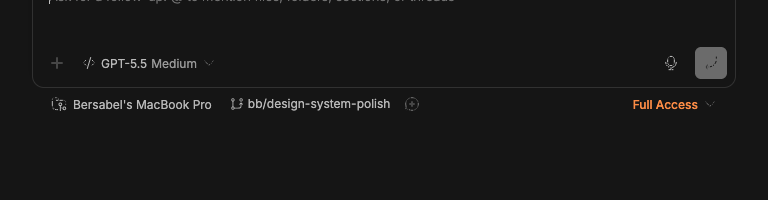
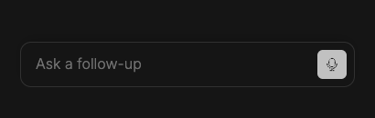

#3205 · Compact follow-up composer omits the active model
Verdict: REPRODUCED · Root-cause confidence: high
1. TL;DR
A follow-up composer rendered at 800 px shows the active GPT-5.5 Medium control, but the same trusted component at 430 px collapses to a row containing only the prompt placeholder and primary action. The responsive state is working; the defect is that compact rendering deliberately excludes the entire footer subtree that owns the execution controls and provides no read-only replacement. The editor placeholder and a separate container-level CSS placeholder can both paint in this state, so adding a summary safely requires suppressing both visual sources while retaining the editor’s accessible name. The same focused assertion failed in two clean checkouts of the trusted main commit.
2. Claims vs findings
| Claim | Status | Evidence |
|---|---|---|
| A compact follow-up composer does not show the active model. | Verified | At 430×820, Chrome measured data-promptbox-compact, found no model picker, and the screenshot shows only “Ask a follow-up” and the primary action. |
| Expanding the same composer reveals its model. | Verified | At 800×820, the same story renders the execution control with accessible name “Provider, model and reasoning” and visible text GPT-5.5 Medium. |
| The compact line uses the prompt placeholder. | Verified | The compact editor has data-placeholder="Ask a follow-up"; the focused test receives that value where an empty visual placeholder is expected while a summary is shown. |
| A compact summary and placeholder overlap in the current trusted build. | Unverified in the base UI | The trusted build has no compact summary surface, so the overlap cannot occur there. The underlying hazard is verified: the collapsed follow-up CSS paints --promptbox-container-compact-placeholder independently of the editor’s data-placeholder. |
| An external prototype resolves the defect. | Unverified | No external branch, patch, attachment, or linked code was fetched or run. |
3. Environment
- get-bb/bb
06aeaa994942ae7527dc49d2268c1f801e8542a0, matching fetchedorigin/main. - Darwin 25.6.0 arm64, Node 22.22.3, Headless Chrome 152.0.7977.75 through doobie.
- Viewport comparison: 800×820 and 430×820 with mobile/touch emulation at the narrow size.
- Fixture: repository
FollowUpPromptBoxControl Emphasis story in Ladle on isolated port51437. - No provider process, account, BB server, host daemon, or persistent BB data was used.
4. Minimal reproduction
- Check out
06aeaa994942ae7527dc49d2268c1f801e8542a0, runpnpm install --frozen-lockfile --prefer-offline, thenpnpm exec turbo run build. - Start the app’s Ladle story server on an unused local port and open
promptbox--follow-up-prompt-box--control-emphasis. - At 800×820, inspect the follow-up composer. The execution control reads
GPT-5.5 Medium. - Resize to 430×820. Confirm
data-promptbox-compactis present, inspect the editor’sdata-placeholder, and look for the model control.
Expected: the empty compact row shows the active model as a read-only summary and does not draw the prompt placeholder in the same region.
Actual:
{
"wide": {
"compact": false,
"editorPlaceholder": "Ask for a follow-up. @ to mention files, folders, sections, or threads",
"modelControl": "GPT-5.5 Medium"
},
"narrow": {
"compact": true,
"editorPlaceholder": "Ask a follow-up",
"modelControl": null,
"promptBox": { "x": 32, "y": 366, "width": 366, "height": 50 }
}
}


Focused regression test source
// @vitest-environment jsdom
import { cleanup, render, screen } from "@testing-library/react";
import { afterEach, expect, it, vi } from "vitest";
import { EMPTY_ORDERED_MENTION_SUGGESTIONS } from "@bb/client-core";
import {
INERT_TYPEAHEAD_COMMAND_CONFIG,
PromptBoxInternal,
} from "./PromptBoxInternal";
afterEach(cleanup);
it("shows a compact summary instead of the empty-editor placeholder", () => {
const compact = {
isCompact: true,
placeholder: "Ask a follow-up",
summary: <span>GPT-5</span>,
};
render(
<PromptBoxInternal
value=""
mentionRanges={[]}
onChange={vi.fn()}
onSubmit={vi.fn()}
mentionMenuPlacement="bottom"
typeahead={{
mention: {
results: EMPTY_ORDERED_MENTION_SUGGESTIONS,
isLoading: false,
isError: false,
onQueryChange: vi.fn(),
},
command: INERT_TYPEAHEAD_COMMAND_CONFIG,
}}
compact={compact}
containerCompactPlaceholder="Ask a follow-up"
/>,
);
const editor = document.querySelector(".ProseMirror");
const form = document.querySelector("[data-promptbox]");
expect(editor?.getAttribute("data-placeholder")).toBe("");
expect(editor?.getAttribute("aria-label")).toBe("Ask a follow-up");
expect(form?.getAttribute("style")).toContain(
'--promptbox-container-compact-placeholder: ""',
);
expect(screen.getByText("GPT-5")).toBeTruthy();
});Repro file: PromptBoxInternal.compact-summary.test.tsx.
The command pnpm --dir apps/app exec vitest run src/components/promptbox/PromptBoxInternal.compact-summary.test.tsx fails on unchanged production code:
AssertionError: expected 'Ask a follow-up' to be '' - Expected + Received + Ask a follow-up Test Files 1 failed (1) Tests 1 failed (1)
5. Verification
The same agent created a second clean detached checkout at 06aeaa994942ae7527dc49d2268c1f801e8542a0, repeated the frozen install and full Turbo build, copied only the authored focused test into that checkout, and ran it again. It failed at the same data-placeholder assertion with one failed file and one failed test. No report claim required correction after the second run.
6. Root cause
FollowUpPromptBox.tsx lines 303–325 converts a narrow or explicitly collapsed composer into a compact configuration containing only isCompact and a placeholder:
const isPromptBoxCompact =
isWidePromptBoxCollapsed || (isCompactViewport && !isInteractionExpanded);
const compactConfig = useMemo(
() =>
isCompactViewport || isWidePromptBoxCollapsed
? {
isCompact: isPromptBoxCompact,
placeholder: composer.compactPromptPlaceholder,
}
: undefined,
…
);
The active model is present in execution, but lines 598–605 place it inside footerStart through ExecutionControls. PromptBoxInternal.tsx lines 3148–3176 mount that entire subtree only when showCompactLayout is false. Compact mode therefore has no component capable of displaying the model.
Separately, PromptBoxInternal.tsx lines 1359–1363 selects the compact placeholder as the editor placeholder. The same value is currently used for both the editor’s accessible label and its visual data-placeholder. In addition, app.css lines 600–605 replace the empty paragraph’s pseudo-content with --promptbox-container-compact-placeholder whenever the follow-up composer is collapsed. Clearing only the editor attribute is therefore insufficient: a safe compact summary must suppress both visual placeholder sources while retaining an accessible editor name.
7. Proposed fix (first principles)
Add an optional read-only summary to the existing compact prompt-box configuration. When the editor is empty and that summary is present, render it in the compact input region, set the visual editor placeholder to an empty string, and keep the editor’s accessible label intact. Have FollowUpPromptBox derive the summary from the active model or selected model option using the existing model-label formatter. Preserve draft text precedence so a non-empty collapsed draft remains visible instead of being covered by the summary.
8. Related issues
No linked open pull request or direct duplicate was found. Recent ui issues were reviewed only for repository classification patterns.
9. Appendix
Commands run
git fetch origin main gh issue view 3205 --repo get-bb/bb --comments pnpm install --frozen-lockfile --prefer-offline pnpm exec turbo run build pnpm --dir apps/app exec ladle serve --host 127.0.0.1 --port 51437 doobie --headless -b slopcop3205 pnpm --dir apps/app exec vitest run src/components/promptbox/PromptBoxInternal.compact-summary.test.tsx
Trust handling
The issue title, body, comments, links, code blocks, and suggestions were treated as untrusted claims. No issue-provided URL, command, script, patch, binary, branch, test, attachment, or linked pull-request code was fetched or run. All executed application code came from the trusted GitHub main SHA or from the minimal test authored from repository evidence.
Limits
The visual check used a real Chrome render of the repository story rather than a production thread with live provider activity. This is sufficient for the component-level responsive branch because the story supplies the same execution props and renders the same production components.